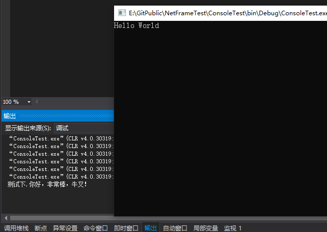

对于一个应用程序而言，Log必不可少，但是有些时候仅仅想看下输出，如果加log的话就显得比较麻烦，这个时候就用到了Debug.WriteLine("测试下,你好，非常棒，牛叉！");Debug 的代码在release模式下并不会真正的执行，这得益于条件编译[Conditional("DEBUG")]，如果要在release 模式下也记录日志的话，那么可以使用Trace。Trace 还提供了多种方法，可以记录Information，Error 等，把 Console 切换到Debug 后，控制台反而没有输出消息了，这是因为Debug是输出窗口。
namespace ConsoleTest
{
class Program
{
static void Main(string[] args)
{
Console.WriteLine("Hello World");
Debug.WriteLine("测试下,你好，非常棒，牛叉！");
Console.Read();
}
}
}如图：
